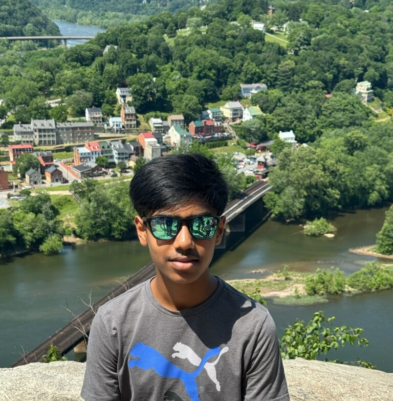

Academics
The AP & Honors courses I've taken that reflect my academic rigor and passion for STEM.
ExploreAccomplishments
Recognitions for academic performance, service, and extracurricular excellence.
Explore
Work Experience
Internships, shadowing, and clinical experience that help shape my professional identity and skills.
Explore
